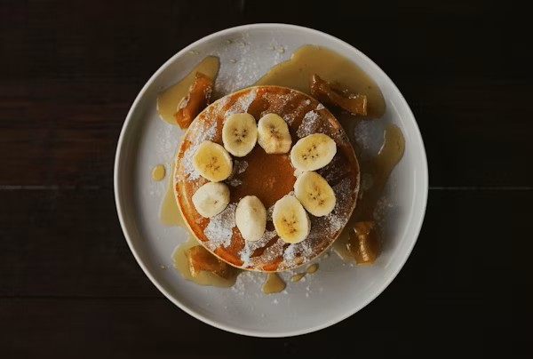

Banana Oat Pancakes
Ingredients:
- 1 ripe banana
- ½ cup oats
- 1 egg
- ¼ cup milk
- ½ tsp baking powder
- ⅛ tsp salt
Steps:
- Mash the banana in a bowl until smooth.
- Add oats, egg, milk, baking powder, and salt; mix well.
- Heat a pan with a little oil over medium heat.
- Pour small amounts of batter into the pan to form pancakes.
- Cook for 2–3 minutes on one side until golden.
- Flip and cook the other side for 2 minutes.
- Serve with honey or fresh fruit.